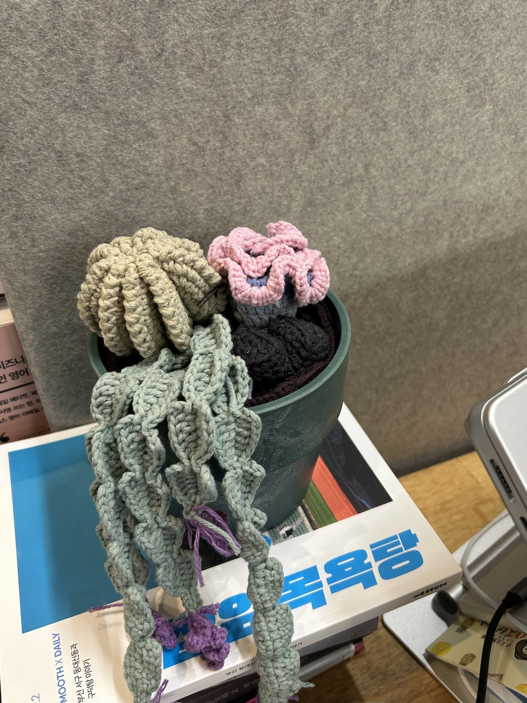

뜨개질로 식물을 뜨고 싶다고 생각한 것은 코바늘을 시작하기 한참도 전의 일이다. 머릿 속으로 종종 인물을 상상하는데, 뜨개질을 하는 사람에 대해서도 자주 상상했다. 혼자서 뜨개질을 하는 사람을 생각했고, 물론 보통 뜨개질을 혼자 하긴 하는데 그니까 내 말은 누구를 위해서 하는 것도 아니고 무엇을 위해서 하는 것도 아니고 그냥 혼자 하다가 언제든지 뜨개질을 안하면 그만인, 그런 의미로 혼자서 뜨개질을 하는 사람을 생각했다.
그런데 혼자서 뜨개질을 하는 사람이 진짜 쓸모 없는 걸 뜨면 좋겠는데 생각을 해서 뜨개 식물이라는 장르를 떠올린 것이다. 지금 와서 생각해보면 아마 내가 식물을 키우는 사람이라서 뜨개 식물이란 것의 무용함을 크게 느낀 듯도 하다. 내 눈 앞에 나보다 생기를 가진 식물이 있다 보니…. 뜨개 식물은 정말로 정말로 의미가 없다. 라고 아마 생각했던 것 같다.
하지만 동시에 식물을 키우는 사람이라서 뜨개 식물에 대한 열망이 자연스레 생긴 것도 있다. 진짜 좋아하는 식물 종류인 고사리를 구현해놓은 도안도 저장해놨다. 현실적이면 현실적일수록 좋았다. 좋아하는 것 + 좋아하는 것 = 혼절 <- 완전 이거였다.. 그리고 일단 나는 의미가 없는 걸 좋아하기도 한다. 혼절에 혼절에 기절이다..
한편.. 2024년의 나는 식물에 많은 관심을 잃었다. 인정하고 싶지 않지만 돌아보면 부정할 수가 없다. 날이 추운 계절에 죽인 화분을 처리하지 않은 채로 날이 더운 계절에 화분을 또 죽이고, 죽은 화분은 죽은 채로 집에 있다. 사실 아직도 죽은 식물을 처리하는 방법을 잘 모르겠다. 살아있는 흙과 식물은 내 소유물인데 죽었다고 길가 화단에 그냥 쏟아버려야 하는 건지, 벌레가 생긴 흙과 식물은 여전히 벌레가 살고 있는 건지, 여름에 봤던 벌레들은 자연히 겨울에는 사라지는 건지, 이렇게 쓰고 보니 식물 키우는 것에 대해 공부를 너무 안했구나 싶다..
나는 죽이지만 않으면 그만인 마음으로 식물을 키웠는데 그러다 보니 진짜 죽지 않을 만큼만 사는 것 같기도 하고. 올해의 나는 식물이 자라는 모습을 지켜 보는 것에 무심했다. 갑자기 2024년을 아주 잘못 산 기분이 든다.. 우리집에서 가장 오래된 식물이 어느 순간부터 곁 줄기들을 마구 떨어뜨리고 있는 걸 봤는데도, 아무 생각이 안 들었다. 그럴 때인가 보다 했다. 문득 이상해서 자세히 살펴보니 뭔가가 부족했고 그제서야 물과 햇빛 같은 기본적인 것을 신경써줬다. 여기까지 돌아 보니 진짜 2024년의 식물 생활이 문제가 많았던 것 같다..
그렇게 식물 키우는 마음이 줄어든 만큼 자연스럽게 코바늘에 중독돼 버린 건가 싶기도 하고. 하여간에 칼 같이 제로섬게임이다.
식물 도안을 찾다가 이 선인장 정원 도안을 발견했고 꽤 규모가 큰 프로젝트여서 쉽게 시작을 못하고 있었다. 그러다가 우연히 화분을 선물 받았고 화분을 선물 받을 때만 해도 식물을 심어야지 생각했지만, 어느 순간 이 화분을 뜨개 식물로 채워야 겠다는 마음으로 바뀌었다.
미련 없이 선물로 주었다. 당연히 내 재미로 떴지만 당연히 받는 사람을 위해서도 떴고, 뜨개질을 할수록 내가 생각한 혼자서 뜨개질을 하는 사람이란 게 다 뭐였을까 이런 생각을 한다.
